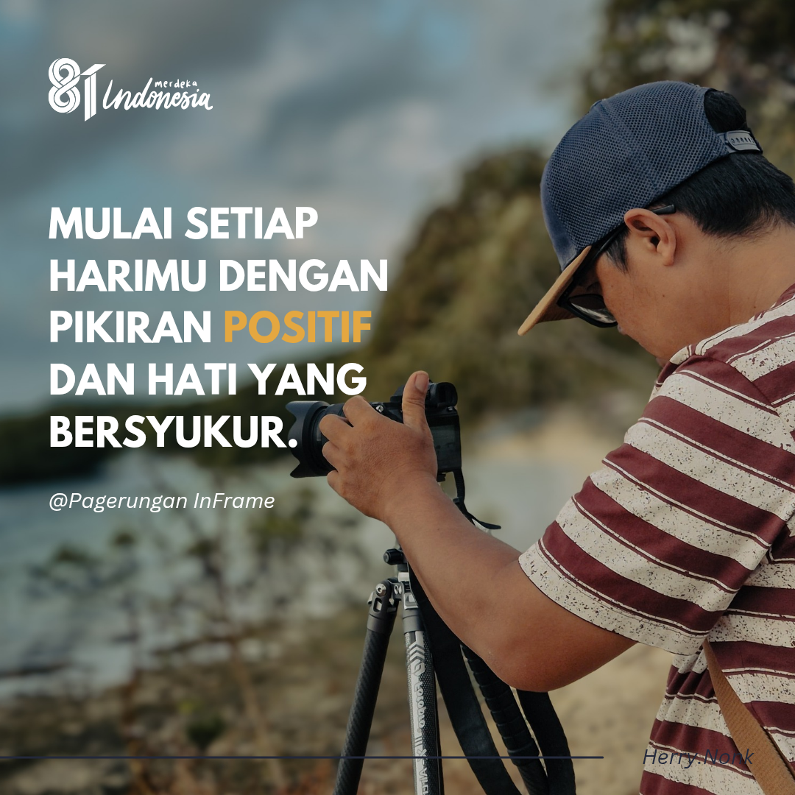
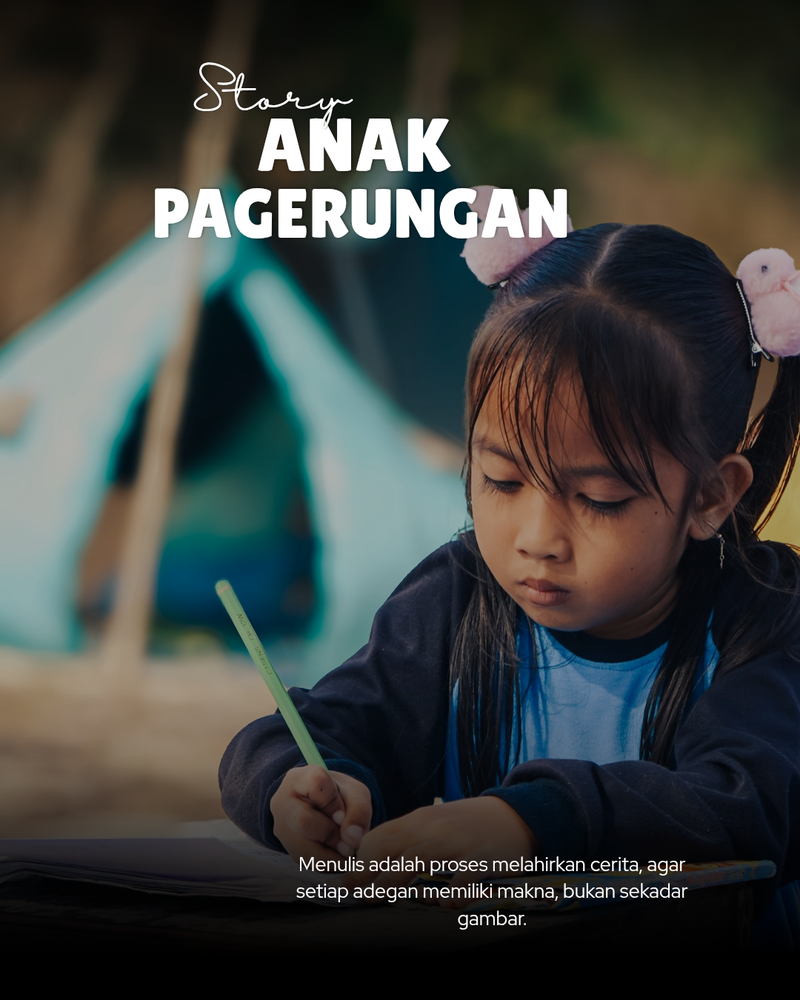
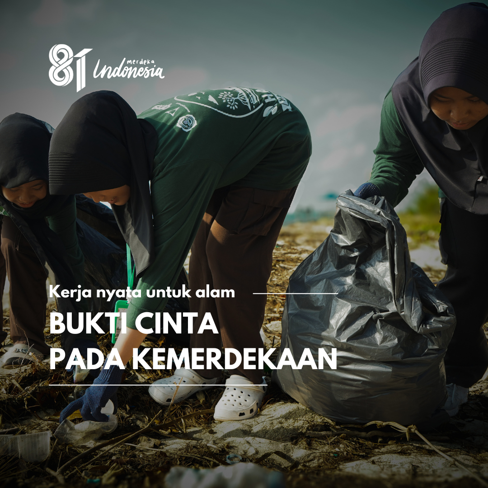

Tentang Kami
Pagerungan InFrame adalah media digital yang mendokumentasikan keindahan alam, budaya, dan kehidupan masyarakat Pulau Pagerungan Besar.
Camat Sapeken dan Kades Pagerungan Besar Serahkan Hadiah Pemenang Lomba Perahu Pakur
Rabu, 19 Agustus 2026

Foto: Penyerahan hadiah secara simbolis kepada pemenang Lomba Perahu Pakur oleh Kepala Desa Pagerungan Besar dan Camat Sapeken.
SAPEKEN – Momen penuh kemeriahan mewarnai panggung penutupan Lomba Perahu Pakur (Tiga Roda) di Desa Pagerungan Besar, Kecamatan Sapeken. Penyerahan hadiah secara simbolis diserahkan langsung oleh Kepala Desa Pagerungan Besar bersama Camat Sapeken di atas panggung utama pada Rabu, 19 Agustus 2026.
Kemeriahan acara ini ditandai dengan pembagian total hadiah bernilai belasan juta rupiah beserta barang elektronik dan unit sepeda bagi para pemenang kejuaraan:
- Juara I: Uang Tunai Rp8.000.000 + Sepeda Listrik
- Juara II: Uang Tunai Rp5.000.000 + Sepeda Pancal
- Juara III: Uang Tunai Rp3.000.000 + Kompor Gas
- Juara Harapan I: Uang Tunai Rp2.000.000
- Juara Harapan II: Uang Tunai Rp1.500.000
- Juara Harapan III: Uang Tunai Rp1.000.000
Lomba Perahu Pakur ini diselenggarakan dalam rangka memeriahkan HUT RI ke-81 sekaligus masuk dalam Kalender Event Kabupaten Sumenep Tahun 2026. Selain sebagai ajang kompetisi bahari, ajang ini juga bertujuan melestarikan tradisi kebaharian lokal dan mempererat tali silaturahmi antarwarga.
Pemerintah Desa Pagerungan Besar bersama Kecamatan Sapeken berharap kegiatan kebudayaan dan keolahragaan bahari seperti ini dapat terus dilaksanakan secara rutin setiap tahunnya.
Galeri Karya
Dokumentasi foto dan visual sinematik lapangan kami:



Hubungi & Ikuti Kami
Klik tombol di bawah ini untuk terhubung langsung dengan media sosial dan kontak resmi Pagerungan InFrame: